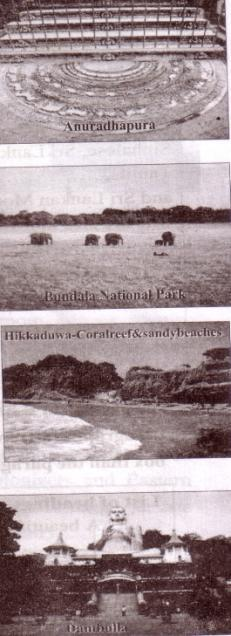

Unit Six
Our Neighbours
Learning outcomes
After we have studied this unit, we will be able to
-
read, comprehend and summaries texts.
-
ask and answer questions.
-
read travel ads and talk about them.
-
Select and write heading
-
write letters to friends describing places of interest.
Lesson 1: Nepal, the land of Everest
A . Read the following passage on Nepal.
a. Known as the Land of Everest, Nepal is one of the most charming countries in Asia. It is also known as the only Hindu Kingdom in the world. The Kingdom of Nepal is a small land of sublime beauty. 1t has some of the world's best and very important temples. It is a country that is rich in scenic beauty and cultural treasures.
b. Nepal lies between India and the Tibetan part of China. This small country has an area of 147,181 square kilometers. Southern Nepal is tropical lowland known as the Tarai Plain. This part of Nepal has hot summers and warm winters. Here temperatures reach up to 40°C in April and May and monsoon rains drench this region from June to September. The central hill-lands including the kathmandu and Pokhara valleys have a temperate climate and are also influenced by the monsoon. North of that is the slope of the main section of the Himalayan range. This part of Nepal has some of the highest peaks of the world including Everest.
c . Nepal is home to nearly 29,000,000 people. The population is primarily rural. Kathmandu, the capital city, has less than one million inhabitants. Nepal`s demographic features are complicated not only by dozens of ethnic groups, but by different castes. In total, there are 103 castes and ethnic groups living in this small country.
The two largest of such groups are known as Chetri and Bahun. Others include Magar, Tharu and Tamang, Newar, Muslim, Gurung and Damai. About 48 percent of the people speak Nepali. Among other language spoken are Maithali, Bhojpuri, Tharu and Tamang.
d. Nepal is the holy land of Lord Pashupatinath and Gautam Buddha where the Hindus and Buddhists have lived together in harmony for centuries. The Temple of Pashupatinath is the most sacred Hindu shrine and one of the four most important cities in the world for Shiva worshippers. Lord Buddha, the light of Asia, was born in Lumbini in Nepal's southern plains, which makes this a sacred pilgrimage destination for the Buddhists as well. In fact, many Nepalese combine Hindu and Buddhist practices; many temples and shrines are shared between the two faiths, and some deities are worshipped by both Hindus and Buddhists.
e. The Kathmandu Valley is the rich cultural heritage centre of Nepal. The three ancient cities of the Valley- Patan, Kathmandu and Bhaktapur- represent an epitome of harmony in urban design, elegant architecture and refined culture. These cities are famous for religious monuments unequalled in the world. The seven monument zones situated within the Valley have been named as World Heritage Sites by UNESCO.
f. Many festivals add dazzling colour to Nepal's vibrant culture, which are celebrated throughout the year. Dasain or dusherra is celebrated nationwide in October. This is the most important of all Nepalese celebration and includes the biggest animal sacrifice of the year. Tihar is celebrated in November. Other festivals include the Holi and Chaitra Daisan. Some Hindu festivals are the Harihodhini Ekadashi, Maha Sivaratri and the Krishna Jayanti. There are Buddhist celebrations too and those include Mani Rimd Buddha Jayanti and Losar; which mark the Tibetan New Year.
B . The passage has six paragraphs (a-f). Choose the most suitable headings for paragraphs (a-f) from the list of headings below. There are more headings in the box than the paragraphs, so you will not use all of them.
|
List of headings l. Climate that varies from place to place 2. a land of religious coexistence 3. A land of high peaks and Everest 4. A small country with huge population 5. A blend of natural beauty and cultural heritage 6. The temples of Nepal 7. Many occasions to celebrate 8. A rich spot of cultural heritage 9. A small population with huge diversity |
C . For each phrase below choose the meaning that is closest to the meaning used in the passage.
1. tropical lowland
a. an area of land having humid climate
b. a land situated on the hill
c. a low-land close to river
d. a land that lies at the foot of a hill
2. temperate climate
a. a weather condition of high temperature
b. a moderate climate
c. a climate with high rainfall
d. a climate that is uncomfortable to live in
3. ethnic groups
a. groups based on their religious faiths
b. groups of people living in the hills-tracts
c. groups having distinct racial and cultural features
d. groups who believe in Buddhism
4. pilgrimage destination
a. a sacred place where people travel to perform religious acts.
b. a historical place with many old buildings.
c. a tourist spot of great scenic beauty.
d. the birthplace of a famous person.
5. elegant architecture
a. temples of gods
b. graceful work of building crafts
c. buildings of historical importance
d. well-designed area of cultural acts
D . Answer the following questions.
1. How many ethnic groups are there in Nepal?
2. What do you know about the weather of Nepal?
3. "Many Nepalese combine Hindu and Buddhist practices ."- Explain this statement with examples from the passage.
4. Which three cities of Nepal will you visit in order to see the rich samples of Nepal's cultural heritage sites?
5. Make a list of the festivals that are celebrated in Nepal.
6. Give at least three reasons why you might be interested to visit Nepal. Also make a list of the places you would love to visit in Nepal.
E . Look at the advertisement of a package tour to Nepal.
|
Dhaka-Kathmandu-Pokhara Package Tour Price: BDT 39,999/ Duration: 4 nights and 5 days Package Includes: * Return Air Ticket with Bangladesh airport taxes & Kathmandu departure taxes * 2 nights’ accommodation in Kathmandu * 2 nights’ accommodation in Pokhara * Buffet: Daily Breakfast and Lunch * Both way Airport transfers in Kathmandu * Kathmandu-Pokhara-Kathmandu by A/C Bus * Half day sightseeing in Kathmandu Valley |
Now, discuss if the statements are true/false. Give the correct information if a statement is false.
a. The package includes the cost of travelling from Kathmandu airport to the hotel in Kathmandu.
b. The tourists will be provided with breakfast, lunch and dinner.
c. The tourists do not have to pay extra for a half-day sightseeing in Pokhara.
d. The tour operators will bear all visa related costs.
e. The tourists will go to Pokhara from Kathmandu by domestic flights.
F . Imagine that you have chosen the package tour shown in E to visit Kathmandu and Pokhara. Now, write a letter to your friend highlighting the main attractions offered by the package. In your letter you should cover the following points.
-
Duration of travel
-
Means of transport used:
1.Dhaka-Kathmandu-Dhaka
2.Kathmandu- Pokhara-Kathmandu
-
Accommodation facilities
-
Breakfast, lunch and dinner
-
Total cost of the package
-
Any other cost that is not covered by the package offer
Lesson 2: Sri Lanka: The pearl of the Indian Ocean
A. Discuss these questions in pairs.
1. Which country is often known as the Pearl of the Indian Ocean?
2. Which country is the world's largest tea exporter?
3. Which country did the spice cinnamon originate from?
4. Which country was mentioned in the great Indian epic the Ramayana?
5. Which country has the highest literacy rate in South Asia?
B . Now read the following passage to find your answers to the questions in A.
a. When someone comes to Sri Lanka, they may often hear the word Ayubowan. This word means `May you have the gift of long life'. It is with this traditional greeting that everyone is welcomed to Sri Lanka. Sri Lanka has many nicknames: Serendip, Ceylon, Tear drop of India, Pearl of the Indian Ocean, etc. These names reveal the richness and beauty of this island nation. Many travelers, from ancient mariners and merchants to modern astronauts, have been attracted by the beauty of this island.
B. Sri Lanka is located in the Indian Ocean, just off the south-eastern coast of India. Shaped like a teardrop, the island of Sri Lanka measures about 415 kilometers from north to south, and about 220 kilometres from east to west, with a total land area of about 65,600 square kilometres. It has more than 1340 kilometres of coastline.
C. Despite its modest size Sri Lanka has a population of about 20 million. Sri Lanka is a
multi-religious, multi-racial and multi-lingual country. The four major ethnic groups are
Sinhalese, Sri Lankan Tamils, Indian Tamils and Sri Lankan Moors or Muslims. A fifth
group, the Veddhas are the original inhabitants of the island. The ancient history of Sri
Lanka is depicted in the Hindu epic the Ramayana. But the most important work on
Lankan origin is related in Mahavamsa or ‘The Great Chronicle’.
Photo of Colombo: The capital city
d. Sri Lanka's economy has traditionally been based on agriculture. The emphasis is on exporting crops such as tea, rubber, and coconuts. In fact, Sri Lanka is the largest tea exporter of the world. The country is also a major producer and supplier of a variety of spices such as cinnamon, cardamom, pepper, cloves, and nutmeg. Cinnamon first originated in Sri Lanka and was introduced later to the world by the Arab merchants.
e. Sri Lanka's archaeological treasures reflect the civilizations of the past that covered the golden age of Greece, the Roman Empire, Mayan citadels, and Napoleonic greatness. The culture that followed those glorious pasts has been enriched by the more recent influences of Western colonizers and Eastern traders. That resulted in developing a unique mix of races and religions, arts and crafts, festivals and costumes available in this small country.
f. Besides these man-made riches, one may find the God-given blessings of nature in Sri Lanka. The island is blessed with azure seas, sandy beaches, green hills, cascading waterfalls, abundant wildlife and a variety of flowers and fruits. The country abounds with coconut groves, spice gardens, tea estates and many other gardens and woods. Travelers from all over the world come to Sri Lanka. Here, a weary traveler can pass a gloriously lazy day by a palm-shaded lagoon looking at the endless ocean. And for the adventurous, days can be full of excitement, snorkeling, swimming, fishing or sailing.
C . From your reading of the above text complete the table with no more than two words and/or numbers.
|
Sri Lanka: Facts |
||
|
People |
Economy |
Natural beauty |
|
There are [dash], four main ethnic groups. They are Sinhalese, Sri Lankan Tamils, [dash] and Sri Lankan Moors who are also known as [dash] The earliest residents of Sri Lanka are known as [dash]. |
Agriculture is a traditional form of economic activities in Sri Lanka. The country exports many crops and [dash] Sri Lanka tops the world in tea export. The spice [dash] was found first in Sri Lanka. |
Sri Lanka is blessed with awesome natural beauty. There are blue seas, sandy beaches, green hills, and flowing [dash] The country has a very rich wild life. A wide variety of fruits and [dash] are also available. Traveler can enjoy the [dash] view sitting at the palm shaded lagoons. |
D . The passage in B has six paragraphs (a-f). Choose the most suitable headings for paragraphs (a-f) from the list of headings below. There are more headings in the box than the paragraphs, so you will not use all of them.
|
List of headings 1. A beautiful island with natural richness 2. Teardrop of India 3. Geographical features 4. A rich multicultural setting 5. Some religious groups of Sri Lanka 6. A traditional economy 7. The land of cinnamon 8. A melting pot of the past civilizations 9. Tourist attractions and leisure activities 10. A country with beautiful beaches |
E . Read the small descriptions of some of the best tourist places in Sri Lanka. Then discuss the questions that follow.
|
Anuradhapura Anuradhapura is one of the ancient capitals of Sri Lanka. The olden city is today surrounded by monasteries, covering an area of over sixteen square miles. The city is also significant in Hindu legend as the capital of King Ravana. Bundala National Park Bundala National Park is one of Sri Lanka's leading destinations for birdwatchers. The park is also home to large populations of elephants, crocodiles, turtles and leopards. Hlikkaduwa- Coral reef & sandy beaches Hikkaduwa is a little town on the south coast of SriLanka. It is well-known for its beach and corals. It is principally a tourist destination, and serves as a great beach with options to surf, snorkel and enjoy the sun. Dambulla Major attractions of this city include the biggest and greatest potted cave temple complex of Sri Lanka. It is also famous for the Rangiri Dambulla Global Stadium, which was built in just 167 days. The city also boasts to have the biggest rose peak range in South Asia and the iron wood forest. |

|
Now discuss the following questions in pairs.
1.Which of the following tourist places do you like to visit"
-
Places with beaches
-
Places of historical importance
-
Places that preserve wildlife
Explain why you like such place(s).
2. If you are given an offer to visit any two of the four Sri Lankan cities above, which two cities will you choose. Explain why?
F . Write a paragraph on some of the interesting places to v i sit in Sri Lanka. Use your own words and the information given in section E.
Lesson 3: The Maldives
A . Discuss the questions in pairs.
1. Did you ever visit any island or seen any island on TV?
2. Have you ever heard of a coral island? Is there any coral island in Bangladesh? 3. What do you know about the Maldives?
B . Now read the text below and answer the questions that follow.
The Republic of Maldives is an island country in the Indian Ocean. It has 1199 ands that are clustered into 26 major atolls. An atoll is a ring-shaped coral reef or a string of closely spaced coral islands. The natural coral reefs of Maldives surrounded by lagoons make each island stand out as a pearl in the Indian Ocean. The Maldives stands at eighth position amongst the smallest countries in the world with an area of 300 square kilometres only. It is the smallest Asian country with respect to population size.
people have been living on the islands of the Maldives from as long as 3000 years. They set sail from different parts of the world- Asia, Arabia, Europe and the Americas- to come to these islands. The earliest settlers of the Maldives were probably from southern India and Sri Lanka who came to these islands in the fourth fifth centuries BC. In the 12th century AD, sailors from East Africa and Arab countries came to the Maldives. As a result, the Maldivians who were originally Buddhists were converted to Sunni
Islam in the mid-12th century. In 1344 Ibn Batuta, a famous :Arab historian and scholar travelled around the Maldives.
In the 16th century, the Portuguese conquered the Maldives and they ruled the country for 15 years. Although governed as an independent Islamic sultanate for most of its history from 1153 to 1968, the Maldives was a British colony from 1887 to 1965. Following independence from Britain in 1965, the sultanate continued to operate for another 3 years. On November 11, 1968, it was abolished and replaced by a republic and the country assumed its present name.
The Maldives is famous as a tourist destination because of its enjoyable weather, heavenly beaches and lagoons, luxurious holiday resorts and the peace-loving people. Being an island country, it enjoys a pleasant weather throughout the year. The Maldives has been ranked as the best country brand for beach, rest and relaxation in 2008. In the same year, it was also ranked second as the best country brand for natural beauty.
The Maldives is well known for being the lowest country in the world. Unfortunately, this small country with idyllic natural beauty is under threat from rising sea levels due to global warming. Most of the country is just 1.5 metres above sea level with a highest point of 2.3 metres! Many predictions have been made with respect to Maldives being swept away by the rising water level in the Indian Ocean. It was even seen during the tsunami of 2004, that many of the island's dry parts were flooded by waters shrinking the island. The government of the Maldives has begun to purchase land from nearby countries in case the islands go under water!
In order to highlight the threats of global warming to its low lying islands, the government of Maldives held a cabinet Underwater meeting underwater in 2009. That was the first ever cabinet meeting in the world that took place underwater. The meeting took place about 5 meter underwater, in a blue green lagoon on a small island. While underwater, the cabinet signed a document calling on all nations to cut their carbon emissions.
C. Ask and answer the questions.
1. What is an atoll?
2. How many countries in the world are smaller than the Maldives in size?
3. When was Islam introduced in the Maldives?
4. What makes the Maldives an ideal place for the tourists?
5. What dangers of climate change might affect the Maldives?
6. Do you support the idea of having a cabinet meeting underwater? What could be the reason for holding such a strange meeting?
D . Complete the table with no more than two words and/or numbers.
|
Time |
Facts |
|
4th and 5th centuries BC |
The early inhabitants of the Maldives arrived and settled from Southern India and Sri Lanka. |
|
12th Century |
The sailors from African and Arab countries started to settle in the islands. Buddhism was [dash] by Islam. |
|
- |
A famous scholar and historian named Ibn Batuta visited the islands of the Maldives. |
|
16th century |
the Portuguese occupied the Maldives and they became the [dash] of the country for 15 years |
|
1887 |
Beginning of the British [dash] era. |
|
- |
Maldives became independent from the British rule. |
|
1968 |
End of Islamic sultanate and [dash] of the Republic of Maldives. |
E . Say if the statements are true or false. Give the true information, in case of a false statement.
1. Only seven countries in the world are smaller in size than the Maldives.
2. No other South Asian countries has a smaller population than the Maldives.
3. The islands of the Maldives were inhabited in the 12th century.
4. The Maldives was an independent Islamic sultanate from 1153 to 1968
5. The Maldives was ranked as the second best country for natural beauty in 2008.
Lesson 4: India: Unity within diversity
A . Read the following text and answer the questions.
India is our closet neighbour. It is the largest among South Asian Countries. In fact, India is the seventh largest country in the world with an area of 3,287,590 square kilometres. India is bounded by the Indian Ocean on the South, the Arabian Sea on the West and the Bay of Bengal on the East. It is bordered by Pakistan to the West; China, Nepal, and Bhutan to the North; and Bangladesh and Myanmar to the East. India is the world's second most populous country after China. Its current population as in 2010 is around 1.15 billion.
New Delhi is the capital of India and about 13 million people live in the capital. India is a land of ancient civilization. The social, economic, and cultural configurations of this vast country are the products of a long process of region expansion. Indian history begins with the birth of the Indus Valley Civilization and the coming of the Aryans. During this period, Aryan culture flourished in this part of the world. The fifth century saw the unification of India under Ashoka, and it is in his time that Buddhism spread in many parts of Asia. In the eighth century, Islam came to India for the first time and by the eleventh century it had firmly established itself. I resulted into the formation of the Delhi Sultanate in 1206 by Qutb ud din Aybek. This was finally succeeded by the Mughal Empire in 1526, under which India once again achieved a large measure of political unity.
It was in the 17th century that the Europeans came to India. This coincided with the disintegration of the Mughal Empire, paving the way for supremacy among the English, the French, the Dutch and the Portuguese. The English emerged as the 'victors'. In 1774 Warren Hastings was appointed the first Governor General of India by the East India Company.
In 1876 Queen Victoria was given the title Empress of India by the British parliament and India came under the British rule completely. They ruled India for nearly two hundred years. This period was marked by India's struggle for independence. Through a series of heroic and patriotic movements to restore freedom, India got its independence in 1947.
The culture of India is one of the oldest and unique in the world. In India, there is amazing cultural diversity throughout the country. The South, North, and Northeast have their own distinct cultures and almost every state has carved out its own cultural distinction. There is hardly any culture in the world that is as varied and unique as India. There are 17 major languages and 844 dialects used by the people of India.
India is a tourists' delight. The Taj ahal, FatehPur Sikri, the Qutab Minar and the Red Fort are a few of the many wonders which attract people from all over the world. Kashmir has been described as a paradise on earth. The country of mountains, valleys, deserts, rivers
and lakes offer the richness of a mini world within a single country. Ooty, Nilgiris and the temples of South India. Ajanta and Ellora caves are the places one can explore in
India.
B Discuss the following questions in pairs.
1 What do you know about the population and size of India?
2 When did Buddhism spread in India?
3 What happened to India during the Mughal Empire?
4 What are some of the tourist attractions in India?
|
Indus Valley Civilization and the coming of the Aryans. |
|
15th Century: the [dash] of India under Ashoka and spread of Buddhism. |
|
8th century: [dash] came to India for the first time |
|
1206: Establishment of the Delhi Sultanate by [dash] |
|
1526: Beginning of the [dash] Dynasty |
|
1774: Warren Hastings was [dash] the first Governor General of India by the East India Company |
|
In 1876 Queen Victoria was given the title Empress of India by the British [dash] |
|
1947: India achieved its [dash] |
C . Complete the flow chart below to show the history of India. Use one word to fill in the each gap.
|
Indus Valley Civilization and the coming of the Aryans. |
|
------> |
|
15th Century: the [dash] of the India under Ashoka and spread of Buddhism. |
|
-------> |
|
8th century: [dash] came to India for the first time. |
|
--------> |
|
1206: Establishment of the Delhi Sultanate by [dash]. |
|
--------> |
|
1526: Beginning of the [dash] Dynasty. |
|
------> |
|
1774: Warren Hastings was [dash] the first Governor General of India by the East India Company. |
|
-------> |
|
In 1876 Queen Victoria was given the title Empress of India by the British [dash]. |
|
--------> |
|
1947: India achieved its [dash]. |
Lesson 5: Bhutan: The land of happiness
A . Read the following text and answer the questions.
Bhutan is called the Jewel of the Eastern Himalayas. This small, landlocked country is located along the southern slopes of the Himalayan range, bounded by Tibet in the North and India from the other sides. The official name of Bhutan is Druk yul which means ‘land of the thunder dragon’. It earned this name because of the fierce storms That often roll in from the Himalayas.The country has an of 38,394 and a population of China 716,896 Since it is cut off from the rest of the world by the Great Himalayas a unique culture and tradition based on gentle Buddhist beliefs have evolved over time.
Bhutanese men wear Gho - a knee length robe - and women wear Kira - a sheet like cloth piece. Bhutanese houses are built from mud and stone, with wooden shingle roof. The Bhutanese never use iron nails in their buildings. Usually, the Bhutanese build each other's houses by exchanging labour within the community.
Different Festivals are celebrated all year round in Bhutan. Colourful masks are used in the festivals which reflect the rich Bhutanese culture. Dances are performed by the Buddhist monks to protect the valleys and ward off evil spirits. The main religious festival is called Tshechus .The teachings of Lord Buddha are enacted through mask dances for three five days in the courtyard of the monasteries. People attend these events in their best clothes, with picnic baskets. Another major festival is called Losar. It is celebrated on Lunar New Year. People cook special dishes and wear new clothes. It is a time for family get -together. Men play archery or darts while women sing and dance.
Pure mountain air, crystal blue skies and tine vegetation cover have made this small country an ideal destination for the environment lovers. The ecosystem of this small nation supports the existence of rich flora and fauna which are protected by strict laws. Even, anyone found guilty of killing a black-necked crane could be sentenced to life in prison.
The government of Bhutan has taken a number of steps to protect its bio-diversity.
Photo of A Bhutanese family in traditional clothes
Bhutan is the first country in the world with specific constitutional obligations on its people to protect the environment. As per the constitution, at least 60 percent of the country must remain under forest cover at all times. Efforts are also taken to protect the nation against the intrusion of foreign cultures and values. The first foreign tourists were allowed into Bhutan in 1974. Now, tourism is encouraged but is controlled and limited to about 6,000 visitors a year. Bhutan is one of the last countries in the world to introduce television and the Internet to its people. The government lifted a ban on TV and the Internet only in 1999. The Bhutanese government has made it mandatory for all Bhutanese to wear only their national dress in public.
Finally, the most interesting fact about Bhutan is that they are the only country that measures success in Gross National Happiness rather than Gross National Product! In 2006, Business Week rated Bhutan as the happiest country in Asia and the eighth happiest country in the world.
B . Choose the most suitable answer for each of the questions below.
1. A unique culture and tradition has evolved in Bhutan because
a. fierce Himalayan storms often hit the country.
b. it is cut off from the other parts of the world.
c. it has a very small area.
d. it is called the Jewel of the Eastern Himalayas.
2. Bhutanese houses are built from
a. mud, stone, woods with iron nails.
b. a sheet of cloth and wooden roof.
c. mud and stone with wooden roof.
d. bamboo and wood.
3. Which of the following activities is mentioned as a way of celebrating, Losar
a. cooking special dishes and wearing new clothes
b. playing chess and badminton
c. having a trip to the neighbouring households
d. harvesting crops
4. As per the constitutional obligation imposed by the Bhutanese government,
a. 60% of the country must remain under forest cover.
b. foreign nationals are not allowed to visit Bhutan still now.
c. no citizen can use the Internet in their houses.
d. people must always wear traditional Bhutanese clothes.
5. The progress of Bhutan as a nation is measured by
a. Gross National Income,
b. Gross National Happiness.
c. Gross National Product.
d. Per Capita Income.